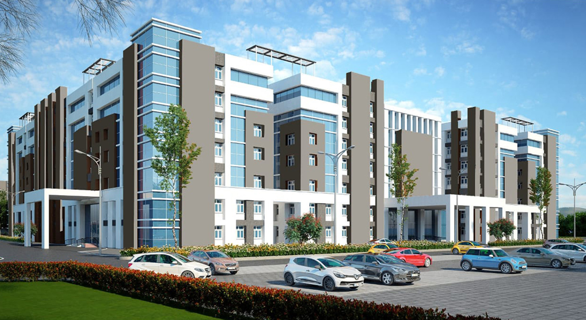

<div id="carouselExample" class="carousel slide" data-bs-ride="carousel" data-bs-interval="2000" data-bs-pause="hover" data-bs-wrap="true">

    <div class="carousel-inner">
      <div class="carousel-item active">
        <div class="position-absolute top-0 start-0 w-100 h-100 d-flex align-items-center" style="background: rgba(24, 29, 56, .7);"></div>
        <div class="container caption">
            <div class="row justify-content-start">
                <div class="col-sm-10 col-lg-8">
                    <h1 class="display-5 text-white animated slideInDown">Sri Venkateswaraa Medical College Hospital and Research Institute</h1>
                    <p class="fs-5 text-white mb-4 pb-2">Education is a movement from darkness to light.</p>
                    <a class="btn btn-primary py-md-3 px-md-5 me-3 animated slideInLeft">Read More</a>
                </div>
            </div>
        </div>
        
      </div>
      <div class="carousel-item">
        
      </div>      
    </div>
    <button class="carousel-control-prev" type="button" data-bs-target="#carouselExample" data-bs-slide="prev">
      <span class="carousel-control-prev-icon" aria-hidden="true"></span>
      <span class="visually-hidden">Previous</span>
    </button>
    <button class="carousel-control-next" type="button" data-bs-target="#carouselExample" data-bs-slide="next">
      <span class="carousel-control-next-icon" aria-hidden="true"></span>
      <span class="visually-hidden">Next</span>
    </button>
    <div class="carousel-indicators">
        <button type="button" data-bs-target="#carouselExample" data-bs-slide-to="0" class="active" aria-current="true" aria-label="Slide 1"></button>
        <button type="button" data-bs-target="#carouselExample" data-bs-slide-to="1" aria-label="Slide 2"></button>       
      </div>
      
  </div>
  